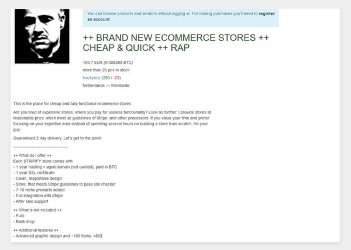

Daha önceden de tahmin ediliyordu ancak, güvenlik araştırmacıları, siber suçluların kötü niyetli faaliyetlerini gizlemek amaçlı, deep/dark web‘de satılan SSL/TLS sertifikaları kullandığını kanıtlarla ortaya çıkardı.
Son zamanlarda yapılan bir araştırmada, siber suçluların güvenli gibi görünen zararlı siteler oluşturmalarına yardımcı olmak için tasarlanan ve sıklıkla zararlı yazılımlar ile paketlenen SSL/TLS sertifikalarının deep/dark web’de bulunduğu ortaya çıkarıldı.
Georgia State Üniversitesi ve Surrey Üniversitesi’ndeki Kanıt Bazlı Siber Güvenlik Araştırma Grubu araştırmacıları tarafından yürütülen bir çalışmada, yeraltı SSL/TLS sertifika pazarının siber suç ekonomisindeki rolüne odaklanıldı.
Makine kimliği koruma sağlayıcısı olan Venafi‘nin sponsorluğundaki çalışmada, Tor ağı pazarında yapılan araştırmalarda beş sitenin sürekli olarak SSL/TLS sertifikası istediği gözlemlendi: Dream Market, Wall Street Market, BlockBooth, Nightmare Market ve Galaxy3.
Sosyal güvenlik numaraları gibi kişisel bilgiler bile deep/dark web’de 1 dolardan satılırken, araştırmacılar, sertifikanın türüne ve sunulan ek hizmetlerin kapsamına bağlı olarak SSL/TLS sertifikalarının 260 ile 1.600 dolara satıldığını tespit etti.

Bazı satıcılar, satış sonrası destek ve bir dizi meşru ödeme sistemiyle entegrasyonun yanı sıra, uzun süredir kayıtlı ve aktif olarak kullanılan web sitelerin sertifikalarını da sunuyor. Daha yeni olarak alınan sertifikalar güvenlik ürünleri tarafından potansiyel olarak, güvensiz işaretlenebiliyor.
Güvenilir SSL/TLS sertifikaları, siber suçluların, phishing saldırılarını gizli bir şekilde yapabilmesi için, HTTPS kontrolleri ve güvenli tarama modları gibi birkaç web tarayıcısının güvenlik önlemlerinden kaçmasına olanak tanıyor. Venafi‘de güvenlik stratejisi ve tehdit istihbaratı başkan yardımcısı olan Kevin Bocek, bu deep/dark web servislerinin temel olarak, siber suçlulara “hizmet kimliği“ verdiğini söyledi. Bocek, SSL/TLS sertifikalarının her bir makineye, benzersiz bir makine kimliği sağladığını, web sitesi ziyaretçilerine ve arama motorlarına güven vermek için kullanıldığını belirtti.
Bocek, “Bu günlerde, makinelerin kimlikleri çok daha değerli, çok daha ilginç ve bilgisayar korsanları için önemli. Saldırıların bir parçası olarak makine kimliğine sahip olmak aslında bügün olmazsa olmazdır, çünkü tarayıcılar artık bir TLS dijital sertifikanız yoksa, web servisinize, web sitenizde saldırı olacağına dair bir politika uygulamaktadır ve sitenizi güvenilmez olarak işaretlemektedir. Hiçbir siber suçlu bunu istemez.” dedi.
Araştırmacılar, çevrim içi yeraltı pazarlarındaki satıcıların, güvenilir makine kimlikleri sunduğunu, ABD‘de ve İngiltere‘deki şirketlere 2.000 ABD dolarından Extended Validation (Ev) sertifikaları sunduğunu da belirtti.
Araştırmacılar, çevrim içi yeraltı pazarlarındaki satıcıların, güvenilir makine kimlikleri sunduğunu, ABD‘de ve İngiltere‘deki şirketlere 2.000 ABD dolarından Extended Validation (Ev) sertifikaları sunduğunu da belirtti.
Ev sertifikaları, saldırganların güvenilir bir şekilde kötü amaçlı web siteleri oluşturmasına ve sunucular arasındaki trafiği şifrelemesine olanak sağlayarak, yapmış olduğu sorunlu davranışların tespitini zorlaştırıyor.
Dijital Sertifikaların Korunması
Bocek, sertifikaların ve anahtarlarının başarılı bir şekilde yönetilebilmesi için kuruluşların SSL/TLS anahtarlarının ve sertifikalarının her birinde görünürlüklerinin olmasını söyledi. Şirketlerin, dijital sertifikalarının etkin yönetimi için otomasyona başvurmaları gerektiğini ifade etti.
Certificate Transparency(Sertifika Şeffaflığı) gibi özgür yazılım projelerinin, güvenlik ekiplerinin SSL/TLS sertifikalarını izlemesine yardımcı olabileceğini de sözlerine ekledi.
Web sitesi güvenliği sağlayıcısı SiteLock‘ın ürün ve kanal uzmanı Monique Becenti, deep/dark web’de SSL/TLS sertifikalarının satışının önemli olduğunu, çünkü tüketicilerin SSL/TLS sertifikalarını kullanarak güvenilir varsayılan siteleri ziyaret ettiklerini ve çevrim içi alışverişlerini gerçekleştirdiklerini söyledi.
Kudelski Security‘nin CTO‘su olan Andrew Howard, “En güvenli yöntem, anahtarları depolamak ve gerekli şifreleme işlemleri gerçekleştirmek için bir donanım güvenlik modülü kullanmak olacaktır. Ancak, bu cihazlar çok pahalı olabilir ve fiyatına değmeyebilir” dedi.
Howard, güçlü donanım güvenliği kullanmayanlar için, odak noktasının sertifika kötüye kullanımı ve uzlaşma kanıtı olup olmadığını kontrol etmek için sürekli izlenmesi gerektiğini söyledi.
Sertifikalarınız az miktardaysa, anahtarlarınızı ve imzalama faaliyetlerinizi yalıtılmış, güvenli bir ağa taşımak yeterli olabilir. Örneğin, kod imzalama ile anahtarlarınızı yalıtılmış bir sistemde tutun ve imzalanmaya hazır olduğunda kodunuzu sisteme taşıyın. Bu, yalıtılmış ağınızın hiçbir zaman internete bağlı kalmadığından ve anahtarlarınızın kötü niyetli kişilerde olmadığından emin olmak için korunan sistemler kullanın.